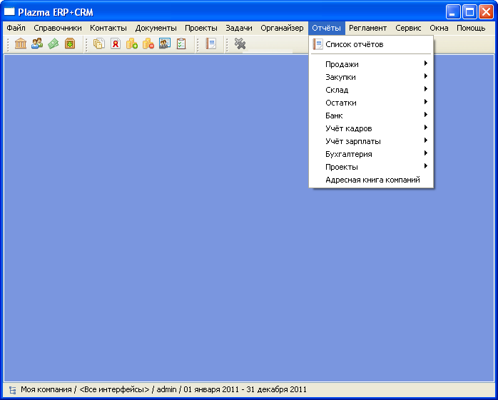
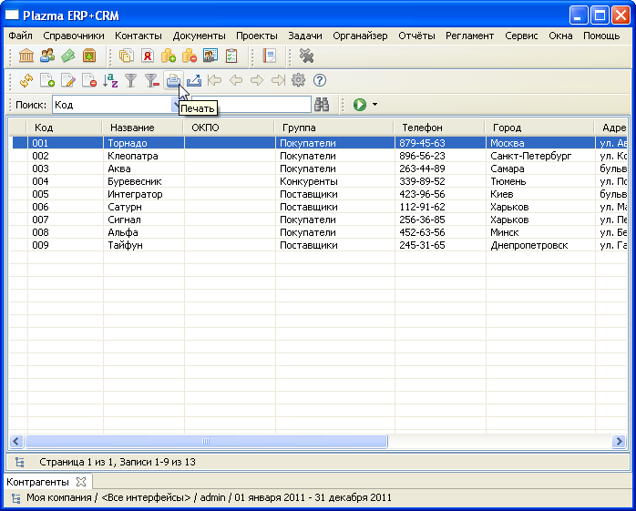
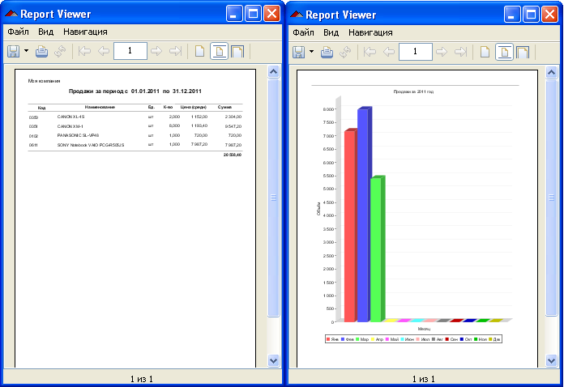

Отчёты
Пункт меню Отчёты
|  |
Запуск отчёта из табличной формы
Некоторые отчёты можно запустить прямо из табличной формы, нажав на панели инструментов формы кнопку Печать
|  |
Примеры отчётов
|  |
ОтчётыПункт меню Отчёты
Запуск отчёта из табличной формыНекоторые отчёты можно запустить прямо из табличной формы, нажав на панели инструментов формы кнопку Печать
Примеры отчётов
|